Neural Networks
Hello There
kishan Rayanal 2SD18CS047
Pruthviraj Horadi 2SD18CS131
What is Neural Network?
Information processing paradigm inspired by biological nervous systems, such as our brain
Definition of ANN
Data processing system consisting of a large number of simple, highly interconnected processing elements (artificial neurons) in an architecture inspired by the structure of the cerebral cortex of the brain
Early models
McCulloch-Pitts neurons
The first computational model of a neuron was proposed by Warren MuCulloch and Walter Pitts in 1943
MCP Neuron Model
1)First mathematical model of a biological neuron
2)Basically building block of neural network
3)Directed weight Graph is used for connecting neurons
4)Two Possible states of neuron
Acive(1)
Silent(0)
BIAS/Threshold
Minimum value of weighted active inputs for a neuron to fire
If effective input is larger than T, then O/p ->1 else 0
Perceptron
Frank Rosenblatt, proposed the classical perceptron model in 1958
1) Developed by Frank Rosenblatt by using McCulloch and Pitts model, perceptron is the basic operational unit of artificial neural networks. It employs supervised learning rule and is able to classify the data into two classes
2) The perceptroncan can only classify data that is linerally separable
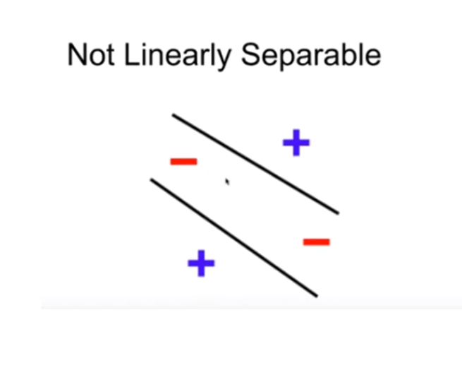
Characteristics of the perceptron:
1) It consists of a single neuron with an arbitrary number of inputs along with adjustable weights
2) The outputof the neuron is 1 or 0 depending upon the threshold
It also consists of a bais which is always 1
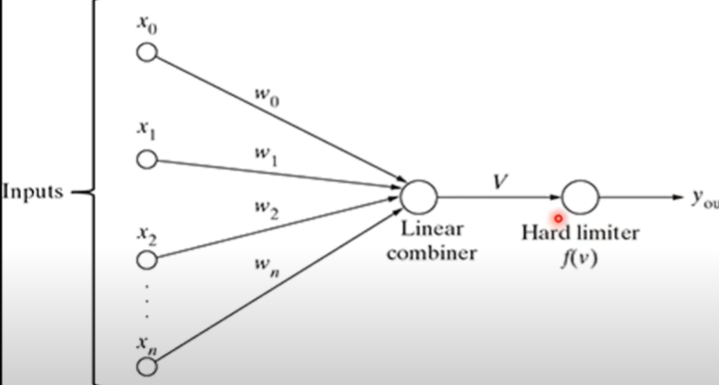
Differences between MP-neuron and Perceptron
a) It overcomes some of the limitationsof the MP neuron by introducing the concept of numerical weights for inputs and mechanism for learning those weights
b) Inputs are no longer limited to boolean values like in the case of an MP-neuron, it supports real inputs as well which makes it more useful and generalized
Activation Function
Neuron
Like a Human Brain, here a Neuron takes input and do some function to give the output Function going to be the Mathematical function Those Function is known as ACTIVATION function .Activation Function
1) Step Function2) Sigmoid Function
3) Tanh Function
.png)
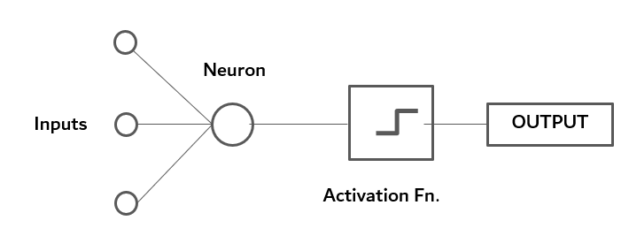
Step Function
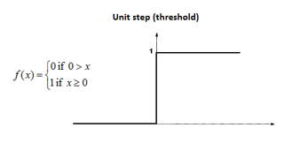If value of X is greater than or equal to 0, then output is 1, If value of X is less than 0, then output is 0
Since step Function is non differentiable to zero, it can’t do the gradient descent method, so it can’t update weights.
Sigmoid Function
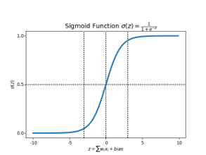If value of X is infinity, then output is 1, If value of X is negative infinity, then output is 0 It captures non-linearity in the data
It can use Gradient descent & Back propagation method to calculate weights.
Output range [0,1]
Tanh Function
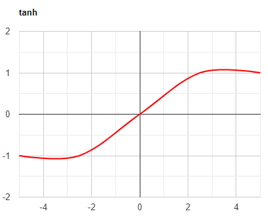Rescaled of Sigmoid Function
Better learning rate requires, higher gradient. In some times, for the data is centred around 0, derivatives are higher.
Output range [0,1]
Implementation of NN
Back Propagation
Calculating error between predicted output and target output and use Gradient descent method to update weights
SVM - Support Vector Machine
What is SVM?
Support Vector Machine” (SVM) is a supervised machine learning algorithm that can be used for both classification or regression challenges. However, it is mostly used in classification problems.
The goal of the Support Vector Machine is to draw a hyperplane in n dimensional space such that it maximises margin between classification groups, so that the new data point can be put in the correct category in future
Let’s Consider an Example
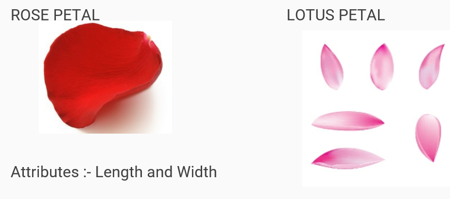Step 1:- Scatter Plot
It is a plot of data points on the graph
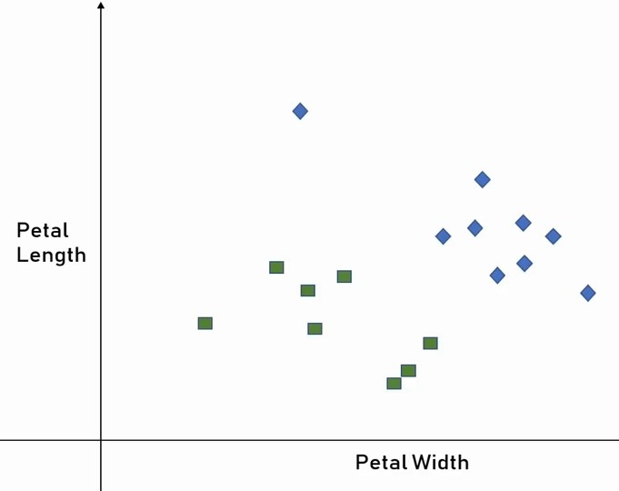Step 2:- Classification Boundary
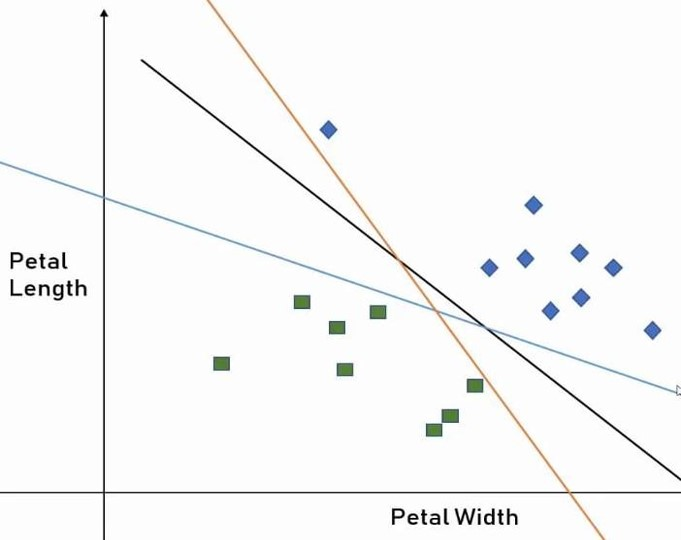Step 3:- Best Classification Boundary
Margin :- The distance between the nearest vectors and the classification Boundary. The classification boundary with higher margin is better because it accommodate more vectors (Black Line) 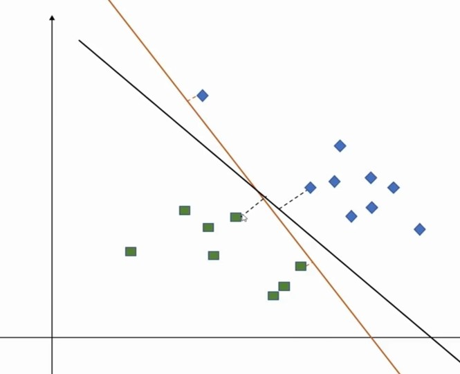The nearby data points are called as support vectors, hence the name Support Vector Machine
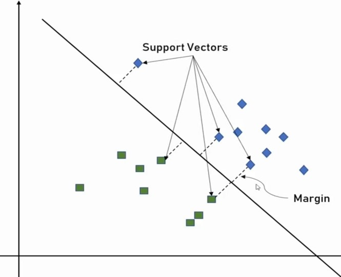Types of SVM
1) Linear SVM
Linear SVM is used for linearly separable data, which means if a dataset can be classified into two classes by using a single straight line, then such data is termed as linearly separable data, and classifier is used called as Linear SVM classifier2) Non-linear SVM
: Non-Linear SVM is used for non-linearly separated data, which means if a dataset cannot be classified by using a straight line, then such data is termed as non-linear data and classifier used is called as Non-linear SVM classifier2D - Line
3D - Plane
ND - Hard to imagine but it is possible theoretically that boundary is called HYPER PLANE
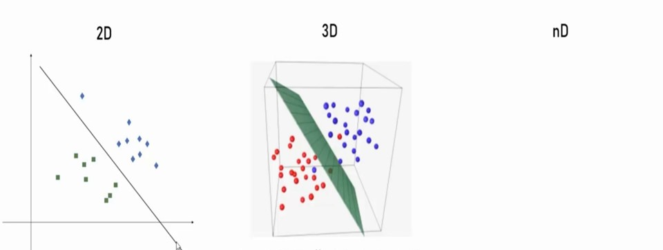Technical terms
1] Gamma (Margin is considered)
High Gamma :
Boundary drawn on the bases of the data points which are nearerLow Gamma :
Boundary drawn on the bases of the far away data points(vectors)2] Regularization(C) (Margin is considered)
High Regularization :
Boundary drawn to avoid any classification errorLow Regularization:
Boundary drawn as a straight line with some error. Both the approach are validImplementation of SVM in Python
We will consider the IRIS flower data set for this implementation
This data set has 4 tables
DESCR, data, feature_names, target, target_nameIt has 4 feature_name
Sepal length, Sepal width, Petal length, Petal width